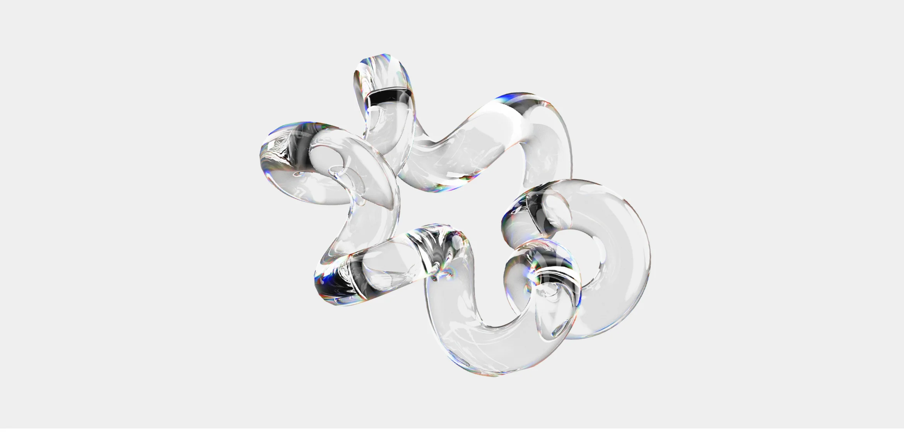

[ Кто исчезнет с рынка к 2035 ]
К 2035 году с рынка будут постепенно уходить задачи, которые легко повторяются и описываются чётким алгоритмом. Это рутинная обработка данных, часть административной работы, базовая поддержка клиентов, простые технические операции. Их всё чаще берут на себя автоматизированные системы.

При этом рынок меняется: вместо большого количества однотипных функций появляются роли, где важнее понимание процессов, принятие решений
и способность работать с нестандартными ситуациями. Ценится умение видеть картину целиком и брать ответственность за результат.
Там, где раньше был десяток исполнителей типовых операций, остаются три специалиста, которые контролируют процессы, принимают решения и работают
с нестандартными ситуациями. Чем больше в профессии мышления, гибкости
и понимания контекста, тем устойчивее она будет в будущем.